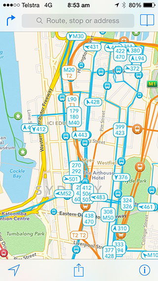

Magic Toy Shop
Website
Client
City of Sydney & Transport NSW
Duration
- Two weeks
Team
- Daniela Rytova
- Kevin Chan
- Manny Dickson
Brief
The client was looking for a digital means to to make traveling a more easy and convenient customer experience.
The Project
The client (Transport NSW & City of Sydney) was looking for a digital means to to make traveling a more easy and convenient customer experience. The aim was to increase ridership of public transportation, specifically during off-peak times, in order to decrease traffic congestion on roads and to improve access to the CBD.
Features
- OmniGraffle
- Axure
- KeyNote
- Adobe Photoshop
- Visual Mockup
- Excel, Word
- Data Sorting
- Competitor Analysis
- Camera
Competitior Analysis
I started by looking into the competitors websites both in Australia and overseas. I closley evaluated the range of products they offer and the services availbile on thier website. I rated the comptitors in order of similarity to "The magic toy shop"
30th June 2014Stakeholder Interview
I had a one on one interview followed by a conference with the "stakeholders" to confirm the requirments specified in the brief and explore the potential of expanding the brief.
30th June 2014Third Party Research
I explored the features that make a sucessful e-commerce website, found additional studies to confirm good website practice and read up on clean interface layouts.
 30th June 2014
30th June 2014
Information Architecture
I was provided with the top 100 items sold in the store and needed to structure the data. I performed an open card sort myself, another with two users and a third closed card sort with a user to solidify my findings. Random catagory sorts were also performed with several users.
 Jan 14
Jan 14
Sitemap
From my research and information architecture findings I was able to create a sitemap to help prioritize and structure the features for sketching.
Jan 14Sketching
I generated several test concepts for the layout and interface. Refering back to my research I refined my ideas to make them more concises. I tested the paper prototypes on several users in order to choose the strongest design
Jan 14User Feedback
I recieved very valuable feedback from users and saw the flaws in my design. The interface was reported to be too cluttered with a mega menu and some taglines on items were confusing. Users also expected to see an FAQ section, a wishlist, community and events pages as well as forum and discussion pages
Jan 14Static Wireframes
I created static wireframes to support the new features and modified the layout and interface to a more structured and simple navigation. I tested the wireframes with users to validate my design
Jan 14Testing Results
Testing results were positive overall, some suggestions were made about name changes with I encorporated. Recieveing this feedback I proceeded to create a clickable prototype.
Jan 14Prototype
I created the prototype using wireframes from Omnigraffle and hotstops in Axure. I did a final round of testing on the prototype with users, this time testing against the prescribed user flows.
Jan 14Next Steps
I presented my process and findings to the "stakeholders" and recommened further tests be conducted. I handed over the documentation including: annotated wireframes, clickable prototype and final presentation document
Jan 14